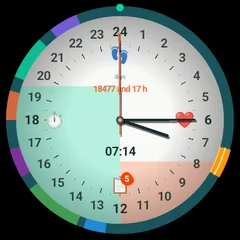

Wear OS
A 24-hour dial for your Wear OS watch
Visdap for Wear OS shows today's tasks as colored sectors on a 24-hour dial, right on your wrist.

- No account
- No ads or tracking
- Works offline

What you get on the watch
Your tasks on the dial
Today's tasks from your phone appear around the 24-hour dial automatically.
Tile
The My day tile shows your day with one swipe.
Complications
Day plan, next task and days left on watch faces that support complications.
Gentle vibration
A short vibration 5 minutes before each task.
Questions and answers
Do I need the phone app?
Yes. You plan in Visdap on your Android phone, and the watch shows your tasks and reminds you.
How do I get the 24-hour watch face?
On Wear OS 6, the 24-hour watch face installs together with the watch app.
Does it work with an iPhone?
No. Visdap for Wear OS works with the Visdap app on an Android phone.
Plan today. See all of it.
Install Visdap and plan your first day in a couple of minutes. Free to start.